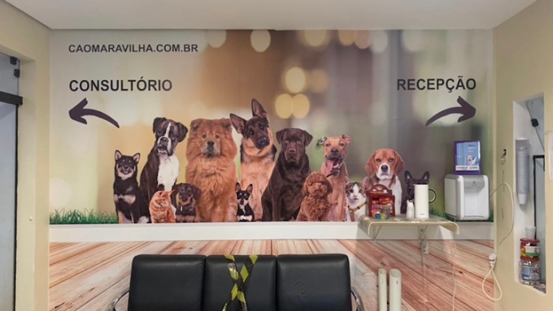

⭐ 4,8 - 338 avaliações no Google
Cuidado Especial para seu Pet
Na Clínica Veterinária Cão Maravilha, oferecemos atendimento veterinário
de excelência na zona norte de São Paulo, com amor e dedicação para
garantir a saúde e bem-estar do seu melhor amigo.
📍 Água Fria, São Paulo
🕒 Seg-Sex: 9h-22h
